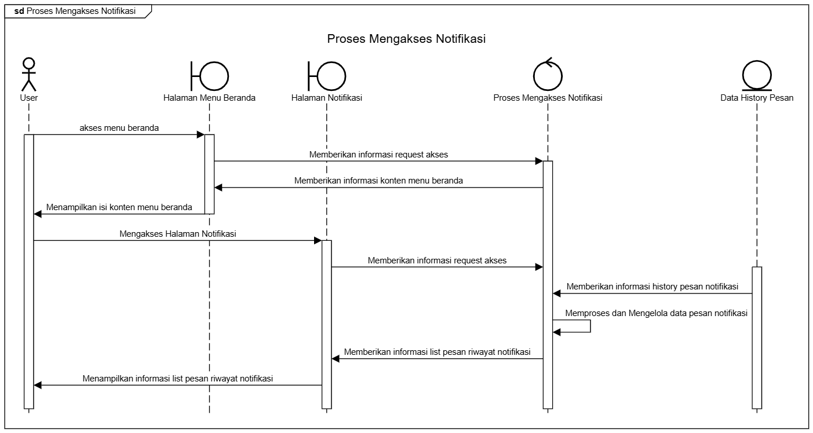
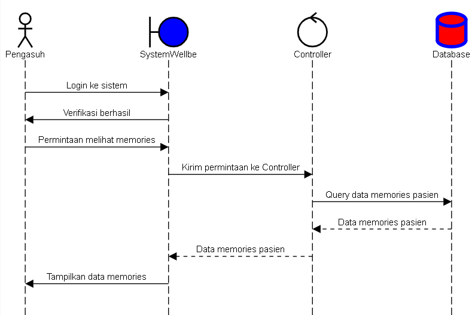

SYSTEM REQUIREMENT SPECIFICATION
OF WELL-BE APPLICATION
A comprehensive overview of the architecture, functionality, and specific requirements for the Well-Be Alzheimer Care Application.
1. INTRODUCTION
1.1 PURPOSE
1.1.1 Ringkasan Keseluruhan Dokumen
Aplikasi Will-be adalah inovasi teknologi yang proaktif dalam memonitor lansia penderita demensia, Alzheimer, dan penurunan daya ingat. aplikasi Will-be ini memiliki fitur-fitur yang mendukung dalam peningkatan kualitas hidup pasien Alzheimer dan mengurangi beban pengasuh, seperti fitur linimasa yaitu fitur untuk menyimpan momen hangat dan bahagia lansia, dan fitur monitoring pelacak keberadaan lansia melalui GPS Tracking.
1.1.2 Tujuan Penulisan Dokumen
Dokumen ini berfungsi untuk mendefinisikan dengan jelas persyaratan sistem dan memberikan panduan terperinci mengenai fitur-fitur aplikasi. Selain itu, dokumen ini memfasilitasi koordinasi antara pengasuh, keluarga, dan tim jaminan kualitas. Juga penting untuk memastikan bahwa aplikasi mematuhi regulasi terkait keamanan dan privasi data, sehingga aplikasi dapat dikembangkan dan diimplementasikan secara efektif dan sesuai dengan kebutuhan yang telah ditetapkan. Aplikasi Will-be dirancang untuk memberikan solusi pemantauan kesehatan yang komprehensif dengan fitur utama yaitu Linimasa, Pelacak Lokasi. Fitur tersebut memfasilitasi koordinasi antara pasien, pengasuh, dan keluarga. Ekspektasi sistem mencakup kinerja yang responsif, keamanan data yang ketat, antarmuka yang intuitif, dan kompatibilitas dengan berbagai perangkat serta platform.
1.1.3 Audiens yang Dituju dan Pembaca yang Disarankan
Audiens yang dituju untuk aplikasi Will-be mencakup manajer proyek, investor dan organisasi kesehatan yang berfokus pada perawatan Alzheimer, serta pengembang dan insinyur yang bertanggung jawab untuk desain, pengembangan, dan pengujian aplikasi. Selain itu, tim jaminan kualitas yang terdiri dari analis QA dan penguji perangkat lunak harus memahami semua persyaratan untuk melakukan pengujian menyeluruh dan memastikan bahwa aplikasi memenuhi standar yang ditetapkan. Personel regulasi dan kepatuhan, seperti ahli hukum dan spesialis kepatuhan, perlu memastikan bahwa aplikasi mematuhi peraturan privasi dan keamanan data yang relevan. Terakhir, pengasuh dan penyedia layanan kesehatan sebagai pengguna akhir aplikasi, akan berinteraksi dengan aplikasi dalam peran sehari-hari mereka dan memanfaatkan fitur-fitur untuk memantau dan mengelola perawatan pasien Alzheimer.
1.2 SCOPE
1.2.1 System Description
Aplikasi Will-be adalah solusi inovatif yang dirancang untuk memantau dan mendukung pasien Alzheimer melalui fitur-fitur yang memudahkan pengasuh dan keluarga dalam memberikan perawatan. Fitur utama yang disediakan mencakup pelacakan lokasi secara real-time menggunakan GPS, manajemen catatan kondisi kesehatan pasien, serta memori yang dapat diakses oleh pengasuh dan keluarga. Aplikasi ini bertujuan untuk meningkatkan kualitas hidup pasien Alzheimer dan memberikan ketenangan bagi keluarga serta pengasuh.
1.2.2 Product Scope
Aplikasi Will-be adalah solusi komprehensif yang dirancang untuk mendukung perawatan pasien Alzheimer melalui fitur pelacakan lokasi real-time, manajemen catatan kesehatan, dan integrasi dengan perangkat smartwatch. Fitur-fitur ini mempermudah pengelolaan data pasien, memantau kondisi kesehatan, dan memberikan notifikasi terkait perkembangan pasien. Aplikasi ini bertujuan meningkatkan efisiensi perawatan, menjaga keselamatan pasien, dan mengurangi beban pengasuh.
1.2.3 Operating Environment
Aplikasi Will-be akan beroperasi pada platform mobile yang mendukung sistem operasi Android dan iOS, dengan minimal OS Android 8.0 (Oreo) ke atas. Sistem membutuhkan koneksi internet untuk layanan GPS, notifikasi real-time, dan sinkronisasi dengan perangkat smartwatch. Lingkungan operasional meliputi perangkat mobile (smartphone dan tablet) dan integrasi dengan perangkat cloud untuk penyimpanan data yang aman.
1.2.4 General Constraint
Untuk mengevaluasi efektivitas aplikasi Will-be dalam meningkatkan kualitas hidup pasien Alzheimer dan mengurangi beban pengasuh, kami akan mengadopsi pendekatan evaluasi yang menggabungkan metode kuantitatif dan kualitatif selama periode waktu yang ditargetkan. Yang memiliki manfaat relevan sebagai berikut:
- Peningkatan Kualitas Hidup Pasien akan diukur melalui pengumpulan data rutin terkait kesehatan pasien, termasuk aktivitas fisik, pola tidur, serta perubahan dalam perilaku, suasana hati, dan fungsi kognitif. Data ini akan diperoleh dari laporan pengasuh dan tenaga kesehatan serta hasil survei dan wawancara dengan pasien untuk mengumpulkan pengalaman subjektif mereka dalam menggunakan aplikasi.
- Peningkatan Koordinasi Perawatan: Aplikasi ini memfasilitasi komunikasi yang lebih baik antara pengasuh, keluarga, dan tenaga medis. Fitur-fitur seperti notifikasi real-time dan integrasi dengan perangkat wearable memastikan bahwa semua pihak terlibat dalam perawatan pasien secara efektif dan dapat mengakses informasi kesehatan yang relevan dengan mudah.
1.3 DEFINITION, ACRONYMS, AND ABBREVIATION
| Term/Acronym | Definition |
|---|---|
| Software Requirements Specifications (SRS) | Dokumen yang menjelaskan seluruh fungsi-fungsi sistem yang dibuat dan batasan-batasannya. |
| GPS | Global Positioning System: Sistem pelacakan lokasi yang digunakan oleh aplikasi. |
| OS | Perangkat lunak sistem yang mengelola perangkat keras komputer dan menyediakan layanan umum untuk program komputer. |
| Memories | Catatan dan kenangan digital pasien yang dapat diakses keluarga dan pengasuh. |
| Realtime | Sistem yang memberikan informasi langsung secara waktu nyata. |
1. OVERALL DESCRIPTION
2.1 PRODUCT PERSPECTIVE (ARCHITECTURE DIAGRAM)

2.2 PRODUCT FUNCTION
2.2.1 USE CASE DIAGRAM

2.2.2 USE CASE SPESIFICATION
| Melacak Lokasi dengan GPS | |
|---|---|
| Aktor Utama | Keluarga, Pengasuh, Smartwatch |
| Summary Description | Akan melacak lokasi pasien secara real time dengan GPS lewat Smartwatch yang sudah diintegrasikan |
| Priority | Critical |
| Status | Draft |
| Precondition |
· Pasien harus menggunakan smartwatch yang terhubung ke aplikasi Well-Be. · Keluarga atau pengasuh harus memiliki akses ke aplikasi Well-Be dan terhubung dengan akun pasien. |
| Post-Conditions |
· Keluarga dan pengasuh mendapatkan informasi terkini mengenai lokasi pasien secara real-time. · Keselamatan pasien lebih terjamin dengan pemantauan terus menerus. |
| Basic path |
· Pasien memakai smartwatch yang memantau lokasi secara real-time. · Keluarga atau pengasuh masuk ke sistem Well-Be. · Sistem secara otomatis memantau lokasi pasien menggunakan GPS yang terintegrasi. · Keluarga atau pengasuh dapat melihat lokasi pasien secara real-time di aplikasi. · Notifikasi diberikan kepada keluarga atau pengasuh jika pasien berada di lokasi berbahaya atau keluar dari zona yang ditentukan |
| Alternative path | Jika GPS tidak terhubung, sistem akan memberikan notifikasi kegagalan pelacakan kepada keluarga dan pengasuh. |
| Login | |
|---|---|
| Aktor Utama | Admin, Pasien, Pengasuh, Keluarga |
| Summary Description | Semua pengguna masuk ke aplikasi Well-Be dengan kredensial masing-masing. |
| Priority | High |
| Status | Draft |
| Precondition | Pengguna memiliki akun di aplikasi Well-Be. |
| Post-Conditions | Pengguna berhasil masuk dan dapat menggunakan fitur sesuai peran. |
| Basic path |
.Pengguna memasukkan username dan password. Sistem memverifikasi kredensial. Pengguna berhasil masuk ke aplikasi. |
| Alternative path | Bisa meminta tolong login dengan admin jika mengalami kesusahan. |
| Mengintegrasikan Smartwatch | |
|---|---|
| Aktor Utama | Keluarga, Smartwatch |
| Summary Description | Menghubungkan smartwatch pasien ke sistem Well-Be untuk pemantauan. |
| Priority | Critical |
| Status | Draft |
| Precondition | Pasien memiliki smartwatch yang kompatibel. |
| Post-Conditions | Smartwatch berhasil terhubung ke sistem Well-Be. |
| Basic path |
1. Admin atau pasien menghubungkan smartwatch ke sistem. 2. Sistem memverifikasi perangkat. 3. Smartwatch terintegrasi dengan sistem. |
| Alternative path | Jika integrasi gagal, sistem menampilkan pesan kesalahan. |
| Melakukan setting GPS | |
|---|---|
| Aktor Utama | Keluarga, Smartwatch |
| Summary Description | Menyetel GPS pada smartwatch untuk pemantauan lokasi. |
| Priority | High |
| Status | Draft |
| Precondition | Smartwatch terhubung ke sistem Well-Be. |
| Post-Conditions | GPS pada smartwatch berfungsi dan terhubung dengan sistem. |
| Basic path |
1. Admin atau pasien membuka pengaturan GPS di smartwatch. 2. GPS diaktifkan dan dihubungkan dengan sistem Well-Be. 3. Sistem mulai memantau lokasi pasien secara real-time. |
| Alternative path | Jika pengaturan GPS gagal, sistem memberikan notifikasi. |
| Memunculkan Biodata Singkat Pasien | |
|---|---|
| Aktor Utama | Admin, Keluarga, Pengasuh |
| Summary Description | Menampilkan biodata singkat pasien yang mencakup informasi dasar seperti nama, umur, dan riwayat kesehatan. |
| Priority | High |
| Status | Draft |
| Precondition | Sistem memiliki data pasien yang terverifikasi. |
| Post-Conditions | Biodata singkat pasien muncul dalam antarmuka pengguna |
| Basic path |
.Aktor masuk ke aplikasi Well-Be. Aktor memilih menu biodata pasien. Sistem menampilkan biodata singkat pasien. |
| Alternative path | Jika data pasien tidak ditemukan, sistem menampilkan pesan kesalahan. |
| Input Data Pasien | |
|---|---|
| Aktor Utama | Keluarga |
| Summary Description | Memasukkan data pasien ke dalam sistem aplikasi Well-Be. |
| Priority | Critical |
| Status | Draft |
| Precondition | Keluarga memiliki akses ke fitur input data pasien. |
| Post-Conditions | Data pasien berhasil disimpan di sistem |
| Basic path |
1. Admin memilih menu input data pasien. 2. Admin mengisi informasi pasien (nama, umur, alamat, riwayat kesehatan, dll). 3. Admin menyimpan data ke dalam sistem. |
| Alternative path | - |
| Mengelola Memories | |
|---|---|
| Aktor Utama | Pasien, Keluarga, Pengasuh |
| Summary Description | Menambah, mengedit, atau menghapus kenangan/memories yang disimpan dalam aplikasi Well-Be. |
| Priority | Critical |
| Status | Draft |
| Precondition | Pasien, Keluarga, Pengasuh memiliki akses ke fitur memories. |
| Post-Conditions | Memories berhasil dikelola sesuai perubahan yang dilakukan. |
| Basic path |
1. Aktor memilih menu memories di aplikasi Well-Be. 2. Aktor dapat menambah, mengedit, atau menghapus memories. 3. Sistem menyimpan perubahan yang dilakukan. |
| Alternative path | Jika terjadi kegagalan penyimpanan, sistem menampilkan pesan kesalahan. |
| Notes Kondisi Kesehatan | |
|---|---|
| Aktor Utama | Admin, Pengasuh, Keluarga |
| Summary Description | Mencatat dan memperbarui informasi terkait kondisi kesehatan pasien. |
| Priority | Critical |
| Status | Draft |
| Precondition | Admin, Pengasuh, Keluarga memiliki akses ke fitur pencatatan kesehatan pasien. |
| Post-Conditions | Informasi kesehatan pasien berhasil disimpan dan diperbarui. |
| Basic path |
1. Aktor memilih fitur pencatatan kondisi kesehatan. 2. Aktor memasukkan atau memperbarui informasi kesehatan pasien. 3. Sistem menyimpan perubahan yang dilakukan. |
| Alternative path | Jika data tidak dapat disimpan, sistem memberikan pesan kesalahan. |
| Notifikasi Notes Progress Kesehatan | |
|---|---|
| Aktor Utama | Keluarga, Pengasuh |
| Summary Description | Mengirimkan notifikasi kepada keluarga dan pengasuh terkait perkembangan kondisi kesehatan pasien. |
| Priority | High |
| Status | Draft |
| Precondition | Sistem menyimpan informasi kesehatan pasien |
| Post-Conditions | Keluarga dan pengasuh menerima notifikasi mengenai kondisi pasien. |
| Basic path |
1. Sistem memantau dan mencatat kondisi kesehatan pasien. 2. Sistem mengirimkan notifikasi perubahan kondisi kesehatan. |
| Alternative path | Jika terjadi kesalahan pengiriman notifikasi, sistem memberikan pesan peringatan. |
2.3 Non-Functional Requirement
| NFR | KEBUTUHAN |
|---|---|
| Functional Suitability |
- Kelengkapan Fungsional : Aplikasi Well-be mencakup semua fitur yang dibutuhkan oleh pengguna, seperti pelacakan lokasi real-time, dan integrasi dengan perangkat wearable. - Ketepatan Fungsional : Fitur-fitur yang disediakan oleh aplikasi Well-be bekerja dengan benar dan memberikan hasil yang akurat. Ini mencakup keakuratan lokasi pasien, pengiriman notifikasi tepat waktu, serta keandalan aplikasi dalam mengumpulkan dan menampilkan data pergerakan pasien tanpa kesalahan. - Kesesuaian Fungsional : Aplikasi Well-be menyediakan fungsi yang berguna dan relevan bagi pengasuh atau keluarga dalam tugas pemantauan pasien Alzheimer. Fitur yang disediakan memberikan informasi yang tepat waktu, dan membantu pengguna dalam mengambil tindakan yang diperlukan, seperti menemukan lokasi pasien dengan cepat atau menanggapi peringatan. |
| Performance |
- Waktu Respons Cepat: Aplikasi Well-be mampu memproses dan menampilkan data lokasi pasien secara real-time, dengan waktu respons kurang dari 5 detik di jaringan 4G/LTE. - Dukungan Pengguna: Aplikasi Well-be mampu menangani hingga 10.000 pengguna aktif secara bersamaan tanpa penurunan performa. - Efisiensi Pemrosesan: Aplikasi Well-be dapat memproses data kesehatan dan lokasi pasien dengan penggunaan sumber daya CPU dan RAM yang minimal, serta tidak melebihi penggunaan memori sebesar 500MB pada perangkat seluler. |
| Compatibility |
- Kompatibilitas Antar-Platform: Aplikasi Well-be dapat berjalan dengan baik di berbagai sistem operasi utama seperti Android (versi minimal 8.0) dan iOS (versi minimal 12.0). - Integrasi dengan Perangkat Wearable: Aplikasi Well-be kompatibel dengan perangkat wearable seperti jam tangan pintar yang mendukung pelacakan Lokasi pasien (misalnya, Apple Watch dan smartwatch). |
| Usability |
- User-friendly Interface: Aplikasi Well-be memiliki antarmuka yang sederhana dan mudah digunakan oleh pengguna dari berbagai kelompok umur, termasuk pengasuh yang mungkin kurang berpengalaman dengan teknologi. - Aksesibilitas: Aplikasi Well-be mendukung fitur aksesibilitas, seperti teks besar dan ikon yang jelas dan sesuai fitur. |
| Security |
- Keamanan Data: Semua data pengguna dienkripsi menggunakan standar AES-256 baik saat penyimpanan maupun saat transmisi data. - Autentikasi Ganda (Two-Factor Authentication): Pengguna harus melalui mekanisme autentikasi ganda untuk mengakses aplikasi guna melindungi informasi pribadi pelacakan lokasi dan catatan kesehatan pasien. |
| Reliability |
- Uptime: Aplikasi Well-be memiliki tingkat ketersediaan 99.9% selama jam operasional, dengan minimal downtime. - Backup Berkala: Data yang disimpan dalam aplikasi Well-be dibackup secara otomatis setiap 12 jam untuk menghindari kehilangan data yang kritis. |
| Maintainability | - Kemudahan Pembaruan: Aplikasi Well-be dirancang agar dapat menerima pembaruan sistem tanpa mempengaruhi fungsionalitas yang sedang berjalan, dengan waktu henti maksimal 5 menit selama pembaruan. |
| Portability |
- Migrasi Mudah: Aplikasi Well-be dapat dipindahkan atau diinstal ulang di perangkat lain tanpa kehilangan data pengguna, dengan mekanisme sinkronisasi berbasis cloud. - Adaptabilitas Lintas Jaringan: Aplikasi harus tetap berfungsi optimal pada jaringan yang lambat (seperti 3G) dengan degradasi fitur yang minim. |
2.4 USER CLASSES AND CHARACTERISTIC
2.4.1 ADMIN
- Tujuan: Mengelola keseluruhan sistem aplikasi, termasuk menambahkan pengguna baru, mengelola data pengguna, memantau kinerja sistem, dan melakukan konfigurasi sistem.
- Keterampilan: Memiliki pengetahuan teknis yang baik, terutama dalam bidang manajemen database dan sistem informasi.
- Kebutuhan:
- Akses penuh ke semua fitur aplikasi.
- Dashboard yang komprehensif untuk memantau aktivitas pengguna dan kinerja sistem.
- Alat untuk menghasilkan laporan dan analisis data.
- Antarmuka yang user-friendly untuk memudahkan pengelolaan sistem.
2.4.2 PENGASUH
- Tujuan: Memberikan perawatan kepada lansia dengan menggunakan aplikasi Will-be untuk memantau kondisi pasien, berkomunikasi dengan keluarga, dan mengakses informasi medis pasien.
- Keterampilan: Memiliki pengetahuan dasar tentang penggunaan perangkat mobile dan aplikasi.
- Kebutuhan:
- Antarmuka yang sederhana dan mudah digunakan.
- Fitur pelacakan lokasi yang akurat untuk memantau keberadaan lansia.
- Fitur komunikasi yang mudah dengan keluarga pasien.
- Akses ke informasi medis pasien secara real-time.
2.4.3 USER/PASIEN/KELUARGA
- Tujuan: Memantau kondisi lansia, berkomunikasi dengan pengasuh, dan mengakses informasi medis pasien.
- Keterampilan: Memiliki pengetahuan dasar tentang penggunaan perangkat mobile.
- Kebutuhan:
- Aplikasi yang mudah digunakan, terutama untuk lansia atau orang yang kurang familiar dengan teknologi.
- Fitur linimasa yang menarik untuk melihat perkembangan kondisi lansia.
- Fitur konsultasi dengan ahli kesehatan secara real-time.
- Notifikasi yang relevan, seperti peringatan jika lansia meninggalkan area yang ditentukan.
2.5 DESIGN AND IMPLEMENTATION CONSTRAINT
2.5.1 Regulatory Policies
Aplikasi Will-be harus mematuhi berbagai peraturan dan kebijakan yang berlaku terkait privasi dan keamanan data. Hal ini termasuk penggunaan data pasien yang sensitif dan perlindungan informasi kesehatan. Aplikasi harus memenuhi standar privasi dan keamanan data yang ditetapkan oleh organisasi kesehatan dan lembaga pemerintah terkait.
2.5.2 Hardware Limitations
Pengembangan aplikasi Will-be harus mempertimbangkan keterbatasan perangkat keras yang digunakan. Misalnya, aplikasi harus dapat beroperasi dengan baik pada berbagai jenis perangkat, termasuk smartphone, tablet, dan komputer desktop. Selain itu, aplikasi juga harus dapat mengintegrasikan dengan perangkat pelacak GPS untuk memantau lokasi lansia secara akurat.
2.5.3 Interfaces to Other Applications
Aplikasi Will-be harus dapat berintegrasi dengan aplikasi lain yang relevan dalam industri kesehatan. Contohnya, aplikasi harus dapat berinteraksi dengan sistem rekam medis elektronik (EMR) untuk memperbarui data pasien secara real-time. Integrasi ini akan memfasilitasi koordinasi antara pengasuh, keluarga, dan tenaga medis.
2.5.4 Parallel Operation
Aplikasi Will-be harus dapat beroperasi secara paralel dengan aplikasi lain yang digunakan oleh pengguna. Hal ini memungkinkan pengguna untuk mengakses berbagai fitur aplikasi secara bersamaan tanpa gangguan. Contohnya, pengguna dapat menggunakan fitur linimasa sambil melakukan konsultasi kesehatan secara real-time.
2.5.5 Audit Functions
Aplikasi Will-be harus dilengkapi dengan fungsi audit yang memungkinkan pengguna untuk memantau aktivitas penggunaan aplikasi. Fungsi audit ini akan membantu dalam memastikan bahwa aplikasi digunakan dengan benar dan memenuhi standar keamanan data. Selain itu, fungsi audit juga akan membantu dalam melakukan analisis data untuk meningkatkan kinerja aplikasi.
2.5.6 Control Functions
Aplikasi Will-be harus memiliki fungsi kontrol yang memungkinkan pengguna untuk mengatur akses dan izin penggunaan aplikasi. Contohnya, pengguna dapat mengatur izin akses untuk membatasi pengguna lain dari mengakses data pasien tertentu. Fungsi kontrol ini akan membantu dalam memastikan bahwa data pasien aman dan tidak dapat diakses oleh orang yang tidak berhak.
2.5.7 Higher-Order Language Requirements
Pengembangan aplikasi Will-be harus menggunakan bahasa pemrograman yang sesuai dengan kebutuhan aplikasi. Contohnya, aplikasi dapat menggunakan bahasa pemrograman seperti Java, Python, atau Swift untuk membangun aplikasi yang stabil dan efisien. Pemilihan bahasa pemrograman yang tepat akan memungkinkan pengembang untuk memenuhi kebutuhan aplikasi dengan lebih baik.
2.5.8 Signal Handshake Protocols
Aplikasi Will-be harus menggunakan protokol handshake signal yang sesuai untuk memastikan komunikasi data yang aman dan stabil. Contohnya, aplikasi dapat menggunakan protokol XON-XOFF atau ACK-NACK untuk mengatur komunikasi data antara perangkat. Protokol handshake signal ini akan membantu dalam memastikan bahwa data tidak terganggu atau hilang selama proses transmisi.
2.5.9 Reliability Requirements
Aplikasi Will-be harus memenuhi standar keandalan yang tinggi untuk memastikan bahwa aplikasi beroperasi dengan stabil dan tidak mengalami gangguan. Contohnya, aplikasi harus dapat beroperasi dengan baik dalam kondisi internet yang tidak stabil dan meminimalkan kesalahan yang dapat terjadi selama proses penggunaan.
2.5.10 Criticality of the Application
Aplikasi Will-be merupakan aplikasi yang sangat kritis karena digunakan untuk memantau kesehatan lansia yang menderita demensia, Alzheimer, dan penurunan daya ingat. Oleh karena itu, aplikasi harus dapat beroperasi dengan stabil dan memenuhi standar keamanan data yang tinggi untuk memastikan bahwa data pasien aman dan tidak dapat diakses oleh orang yang tidak berhak.
2.5.11 Safety and Security Considerations
Aplikasi Will-be harus mempertimbangkan aspek keamanan dan keselamatan yang sangat penting dalam pengembangan aplikasi. Contohnya, aplikasi harus dilengkapi dengan fitur keamanan seperti enkripsi data dan autentikasi pengguna untuk memastikan bahwa data pasien aman dan tidak dapat diakses oleh orang yang tidak berhak. Selain itu, aplikasi juga harus dilengkapi dengan fitur keselamatan seperti deteksi anomali untuk memantau aktivitas penggunaan aplikasi yang tidak biasa dan mengambil tindakan segera jika ditemukan aktivitas yang mencurigakan.
2.6 ASSUMPTION AND DEPENDENCIES
Dalam bagian ini, akan dijelaskan faktor-faktor yang dapat mempengaruhi persyaratan yang tercantum dalam SRS. Faktor-faktor ini tidak dianggap sebagai batasan desain perangkat lunak, tetapi perubahan pada faktor-faktor tersebut dapat mempengaruhi persyaratan sistem yang telah dijelaskan. Asumsi dan ketergantungan ini perlu dipertimbangkan selama proses pengembangan dan penerapan aplikasi Will-be.
2.6.1 ASSUMPTIONS
Asumsi berikut diambil sebagai dasar untuk pengembangan dan pengoperasian aplikasi Will-be:
- Akses ke Internet yang Stabil
Diasumsikan bahwa pengguna (pengasuh, pasien, keluarga, tenaga medis) memiliki akses yang stabil ke jaringan internet agar dapat menggunakan fitur-fitur seperti konsultasi real-time, pelacakan GPS, dan pencarian tenaga perawat. - Ketersediaan Perangkat Kompatibel:
Diasumsikan bahwa pengguna akan menggunakan perangkat yang kompatibel (seperti smartphone atau tablet) yang mendukung aplikasi Will-be untuk menjalankan fitur-fitur seperti pelacakan GPS dan konsultasi - Pengguna Memiliki Pemahaman Dasar Teknologi:
Diasumsikan bahwa pengguna, terutama pengasuh dan keluarga, memiliki tingkat literasi teknologi yang cukup untuk menggunakan aplikasi secara efektif. - Peraturan Privasi dan Keamanan Data Dapat Diakomodasi
Aplikasi diasumsikan akan mematuhi semua regulasi yang berlaku terkait privasi dan keamanan data pasien, termasuk peraturan GDPR dan HIPAA (jika berlaku) - Tenaga Perawat yang Tersedia:
Diasumsikan bahwa ada tenaga perawat yang cukup di pasar untuk memenuhi permintaan yang diciptakan oleh aplikasi terkait layanan perawatan bagi penderita Alzheimer. - Akses ke Layanan Medis
Diasumsikan bahwa aplikasi ini akan digunakan dalam wilayah di mana pengguna memiliki akses yang cukup terhadap layanan medis untuk mendukung fitur konsultasi dan pengelolaan kesehatan pasien.
2.6.2 DEPENDENCIES
Pengembangan dan kinerja aplikasi Will-be bergantung pada beberapa faktor eksternal berikut:
- Ketergantungan pada Infrastruktur Pihak Ketiga:
Aplikasi ini bergantung pada layanan GPS pihak ketiga untuk pelacakan lokasi dan peta, serta layanan pihak ketiga untuk mengelola komunikasi real-time antara pengguna dan ahli kesehatan. Jika layanan ini tidak tersedia atau mengalami masalah, fungsionalitas aplikasi akan terpengaruh. - Pembaruan Sistem Operasi
Ketergantungan pada pembaruan sistem operasi perangkat pengguna (iOS dan Android). Perubahan besar pada sistem operasi dapat mempengaruhi kinerja atau kompatibilitas aplikasi. - Kepatuhan terhadap Regulasi Kesehatan dan Privasi:
Aplikasi ini bergantung pada perkembangan regulasi privasi dan kesehatan, seperti HIPAA atau GDPR. Setiap perubahan dalam undang-undang ini dapat mempengaruhi cara aplikasi menangani dan menyimpan data pengguna. - Ketergantungan pada Infrastruktur Server:
Sistem server yang digunakan untuk penyimpanan data dan proses aplikasi harus memiliki uptime yang tinggi untuk memastikan ketersediaan fitur seperti linimasa dan konsultasi real-time. Jika ada masalah server, fungsionalitas aplikasi akan tergang - Ketersediaan Tenaga Perawat:
Aplikasi ini bergantung pada ketersediaan tenaga perawat di area di mana aplikasi ini beroperasi. Jika ada kekurangan tenaga perawat, fitur pencarian perawat mungkin tidak berfungsi sebagaimana mestinya. - Integrasi dengan Sistem Kesehatan Lainnya
Aplikasi bergantung pada integrasi yang mulus dengan sistem kesehatan atau perangkat lunak lainnya yang digunakan oleh tenaga medis. Jika ada masalah integrasi, fitur konsultasi atau pelacakan kesehatan mungkin terganggu.
2.7 APPENDIX
2.7.1 Organisasi Specific Requirement
2.7.1.1 DFD
Level 0:

Level 1:

Level 2:
- Mengelola pengguna
- Notification


2.7.1.2 CDM & PDM
CDM

PDM

2.7.1.3 Diagram Sequence
1. Admin
a. Mengelola memories pasien

b. Mengelola data pasien

c. Mengelola notes progress kondisi kesehatan

d. Mengelola log lokasi real time pasien

2. Keluarga
a. Mengintegrasikan smartwatch (extend input data)

b. Mengintegrasikan smartwatch (extend setting GPS)

c. Mengelola memories

d. Mengelola notes kondisi kesehatan

e. Memantau lokasi real time

f. Menerima notifikasi

3. Pengasuh
a. Menerima notifikasi

b. Melihat memories

4. Pasien
a. Melihat memories

5. Smartwatch
a. Memunculkan biodata singkat pasien

b. Melacak lokasi real time dengan GPS

2.7 USER INTERFACE (USER STORY)
2.7.1 USER STORY (Deskripsi Role)
a. ADMIN
Admin bertanggung jawab atas pengelolaan data dan sistem informasi pasien serta pengasuh. Peran ini mencakup memastikan bahwa data pasien, seperti kondisi kesehatan, catatan perkembangan, serta informasi identitas dan kebutuhan khusus, selalu terupdate dan akurat. Admin juga mengelola data pengasuh, memastikan ketersediaan informasi terbaru terkait kualifikasi, penjadwalan, dan catatan kehadiran pengasuh. Selain itu, admin berperan dalam pembuatan laporan perkembangan kesehatan bulanan untuk memudahkan pemantauan dan evaluasi kesehatan pasien secara berkala, sehingga dapat menjadi referensi untuk perbaikan perawatan.
b. PASIEN
Pasien adalah penerima utama layanan perawatan dan pemantauan kesehatan. Pasien memiliki akses ke sistem untuk menyimpan momen atau memori, baik berupa foto, catatan, maupun video, sebagai cara untuk mengabadikan momen penting. Pasien juga dapat dipantau kondisinya secara real-time, sehingga memastikan mereka selalu berada dalam pemantauan yang aman. Ini termasuk pemantauan lokasi, yang dapat membantu memastikan keamanan mereka di mana pun berada.
c. PENGASUH
Pengasuh adalah individu yang bertanggung jawab atas pemantauan dan perawatan kesehatan pasien secara langsung. Peran ini mencakup memantau kondisi fisik, mental, dan kesehatan pasien secara real-time agar perawatan yang diberikan selalu sesuai dengan kondisi dan kebutuhan pasien pada saat itu. Pengasuh juga memantau lokasi pasien secara real-time untuk memastikan keamanan dan memberikan notifikasi kepada admin atau keluarga jika ada perubahan signifikan pada kondisi atau lokasi pasien. Notifikasi ini memungkinkan pengasuh untuk mengambil tindakan cepat saat pasien membutuhkan bantuan atau dalam keadaan darurat.
d. KELUARGA
Keluarga pasien berperan sebagai pengawas eksternal yang peduli terhadap kondisi dan keamanan pasien. Mereka memiliki akses untuk memantau lokasi pasien secara real-time agar bisa mengetahui keberadaan pasien kapan pun diperlukan. Selain itu, keluarga dapat memantau perkembangan kesehatan pasien dan melihat catatan atau memori yang disimpan pasien, sehingga tetap dapat merasakan keterlibatan dalam kehidupan pasien. Keluarga juga akan menerima notifikasi terkait kondisi kesehatan dan keberadaan pasien untuk memastikan bahwa mereka selalu mendapatkan informasi terbaru tentang keadaan orang yang mereka sayangi.
2.7.2 USER STORY
a. ADMIN
- Saya ingin mengelola data pasien agar informasi pasien selalu terupdate dan akurat.
- Saya ingin mengelola data pengasuh agar bisa memastikan informasi pengasuh selalu diperbarui.
- Saya ingin melihat laporan perkembangan kesehatan bulanan agar bisa mengevaluasi kondisi kesehatan pasien secara berkala dan sebagai dokumentasi notes progress pasien.
b. PASIEN
- Saya ingin mengingat semua memori agar saya dapat mengingat kembali momen saya.
- Saya ingin kondisi dan keberadaan saya dipantau dengan realtime.
c. PENGASUH
- Saya ingin memantau kondisi pasien saya agar bisa memberikan perawatan yang sesuai dengan kondisi pasien.
- Saya ingin memantau keberadaan pasien saya dengan realtime dimanapun berada.
- Saya ingin mendapatkan notifikasi keberadaan pasien saya dengan realtime dan notifikasi kondisi pasien saya.
d. KELUARGA
- Saya ingin memantau lokasi real-time pasien agar saya bisa mengetahui keberadaan mereka secara langsung.
- Saya ingin memantau kondisi pasien agar bisa terus mengetahui perkembangan kesehatan mereka.
- Saya ingin melihat dan mengelola memori pasien agar dapat mengetahui momen terindah pasien.
- Saya ingin mendapatkan notifikasi keberadaan dan notes kondisi pasien.
2.7.3 USER SCENARIO
| Aplikasi WELL-BE | |
|---|---|
| Fitur | Melacak Lokasi Secara Real-time |
| Scenario |
- Pengguna sudah login terlebih dahulu - Pengguna membuka halaman pemantauan pasien - Pengguna melihat lokasi pasien secara real-time yang sudah tersambung pada smartwatch - Lokasi pasien selalu terbarui |
| Aplikasi WELL-BE | |
|---|---|
| Fitur | Mengelola linimasa aktivitas (memories) pasien |
| Scenario |
- Pengguna sudah login terlebih dahulu. - Pengguna membuka halaman linimasa. - Pengguna dapat mengupload memories pasien. - Pengguna bisa melihat semua memories pasien. |
| Aplikasi WELL-BE | |
|---|---|
| Fitur | Mengakses catatan kesehatan pasien |
| Scenario |
- Pengguna sudah login terlebih dahulu - Pengguna membuka halaman catatan kesehatan pasien - Pengguna melihat catatan kesehatan pasien - Pengguna bisa mencari catatan kesehatan berdasarkan tanggal dan waktu |